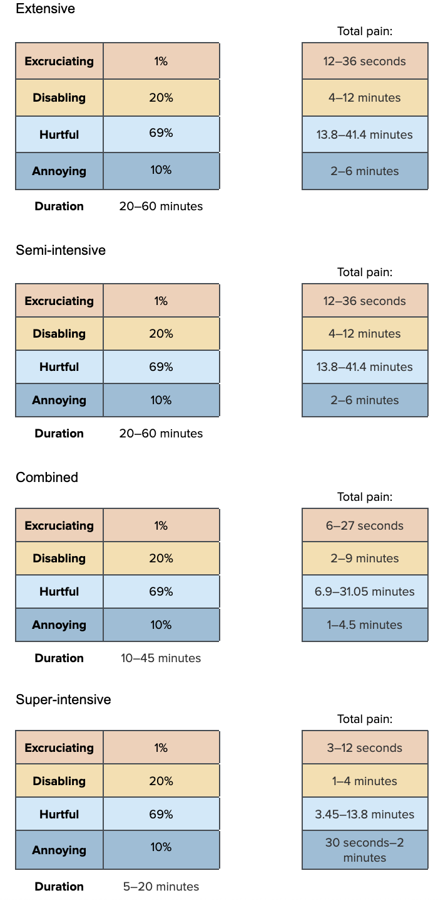
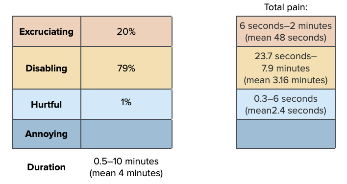

prev_harvest_stat <- data.frame(FarmType = c(
"Extensive", "Semi-Intensive","Intensive","Super-Intensive"),
mean = c(0.99999, 0.999999, 0.995, 0.975),
sd = c(0.0000001, 0.0000001, 0.003744034, 0.01852459))
prev_harvest_dist<-mapply(sample_beta, prev_harvest_stat$mean, prev_harvest_stat$sd)
colnames(prev_harvest_dist)<-prev_harvest_stat$FarmType
prev_harvest_dist[,1:2] <- 1
prev_harvest_unadjusted<-as.data.frame(prev_harvest_dist)
prev_harvest<-prev_harvest_unadjusted*stage_probabilities[,3] # weighting by the probability a shrimp makes it to slaughter ageEnd of production
Harvest
Here, we are evaluating any collection method that does not kill the shrimp before removing them from the ponds or tanks nor pumps them directly to slaughter. This includes cast nets or seine nets, scoop nets, draining shrimp out of the pond into a net, and mechanically pumping shrimp out of the pond.
Prevalence
All shrimp who make it to slaughter age are harvested. Some intensive and super-intensive farms use pumps that pump shrimp directly into the ice slurry slaughter, so these do not apply to this welfare threat. Therefore, we use ranges between 99 to 100% and 95 to 100%, respectively.
Extensive and semi-intensive farms probably only use collection methods of the type considered here, so we set these to 100%.
Our prevalence estimates are:
| Extensive | Semi-intensive | Intensive | Super-intensive |
|---|---|---|---|
| 100% | 100% | 99–100% | 95–100% |
find_good_sd_binary(mean_val=0.995, tol=1e-6, sd_val=0.01,
fifth_percentile=0.99, ninety_fifth_percentile=1)
find_good_sd_binary(mean_val=0.975, tol=1e-6, sd_val=0.01,
fifth_percentile=0.95, ninety_fifth_percentile=1)[1] 0.003744034[1] 0.01852459Sampling from beta distribution:
Pain-Tracks
Our hypothesized pain category allocations are as follows:

We think the duration of harvest varies by farm type so we construct a Pain-Track for each farm type. However, we use the same pain intensity attributions for each.
dur_harvest_ext<-runif(n, 1/3, 1)
dur_harvest_semi<-runif(n, 1/3, 1)
dur_harvest_int<-runif(n, 1/6, 0.75)
dur_harvest_super<-runif(n, 1/12, 1/3)
pain_harvest<-data.frame(sample_dirichlet(1, 20, 69, 10)) %>%
`colnames<-`(paincategories)Combine the intensity and duration information
paintrack_harvest_ext<-(dur_harvest_ext * pain_harvest)
paintrack_harvest_semi<-(dur_harvest_semi * pain_harvest)
paintrack_harvest_int<-(dur_harvest_int * pain_harvest)
paintrack_harvest_super<-(dur_harvest_super * pain_harvest)Weight the pain tracks by prevalence estimations and proportion of farming attributable to each farm type.
harvest_farms<-data.frame(
ext = paintrack_harvest_ext*prev_harvest$Extensive*prop_sample$Ext,
semi = paintrack_harvest_semi*prev_harvest$`Semi-Intensive`*prop_sample$Semi,
int = paintrack_harvest_int*prev_harvest$Intensive*prop_sample$Int,
super = paintrack_harvest_super*prev_harvest$`Super-Intensive`*prop_sample$Super)Add the pain categories across farm types and calculate the disabling-equivalent pain hours.
harvest<-harvest_farms %>%
mutate(allfarms.Annoying = ext.Annoying + semi.Annoying + int.Annoying + super.Annoying,
allfarms.Hurtful = ext.Hurtful + semi.Hurtful + int.Hurtful + super.Hurtful,
allfarms.Disabling = ext.Disabling + semi.Disabling + int.Disabling + super.Disabling,
allfarms.Excruciating = ext.Excruciating + semi.Excruciating + int.Excruciating + super.Excruciating,)
average_hours_harvest <- harvest %>%
select(starts_with("allfarms"))
average_hours_harvest$Disabling_Equivalent<- (
average_hours_harvest$allfarms.Annoying*Annoying_Weight) + (
average_hours_harvest$allfarms.Hurtful*Hurtful_Weight) +(
average_hours_harvest$allfarms.Disabling*Disabling_Weight)+(
average_hours_harvest$allfarms.Excruciating*Excruciating_Weight)
harvest_summary<-cbind(round(rbind(
(quantile(x =average_hours_harvest$allfarms.Annoying, probs = c(.05, .50, .95))),
(quantile(x =average_hours_harvest$allfarms.Hurtful, probs = c(.05, .50, .95))),
(quantile(x =average_hours_harvest$allfarms.Disabling, probs = c(.05, .50, .95))),
(quantile(x =average_hours_harvest$allfarms.Excruciating, probs = c(.05, .50, .95))),
(quantile(x =average_hours_harvest$Disabling_Equivalent, probs = c(.05, .50, .95)))), 10),
"Mean" = colMeans(average_hours_harvest))
row.names(harvest_summary)<-c(
"Annoying_harvest","Hurtful_harvest","Disabling_harvest", "Excruciating_harvest", "Disabling-Equivalent_Harvest")
show_table(harvest_summary)| 5% | 50% | 95% | Mean | |
|---|---|---|---|---|
| Annoying_harvest | 0.0128554 | 0.0319189 | 0.0625832 | 0.0340299 |
| Hurtful_harvest | 0.1148507 | 0.2319090 | 0.3655179 | 0.2347488 |
| Disabling_harvest | 0.0296953 | 0.0655724 | 0.1148003 | 0.0680293 |
| Excruciating_harvest | 0.0001429 | 0.0022085 | 0.0107088 | 0.0033801 |
| Disabling-Equivalent_Harvest | 0.1149168 | 0.9550166 | 6.3192196 | 1.7883996 |
Slaughter
Here, we are evaluating the ice slurry method of slaughter.
Prevalence
All shrimp who are slaughtered are slaughtered using ice slurry, bar those on farms that the Shrimp Welfare Project has provided electrical stunners to. SWP currently estimate they have helped 1.2 billion shrimp by providing electrical stunners—that’s 0.3% of the number of penaeids slaughtered per year:
slaughtered_samp<-read.csv(file="../data/slaughtered_samples.csv") # from Guesstimate model
slaughtered_samp<-slaughtered_samp[,1:3] # keep only penaeids
# sum across rows
slaughtered_samp_totals<-slaughtered_samp %>%
mutate(total=vannamei + monodon + other_pen)
(1200000000/mean(slaughtered_samp_totals$total))*100[1] 0.2990682Shrimp who are sold live are not slaughtered so we must account for this in our estimations. We, therefore, estimate that all farm types are 98% likely to use ice slurry to slaughter shrimp. We then account for the fact that only shrimp who make it slaughter age and do not die during collection are slaughtered. To do this, we weight by the relevant life-stage proportions, and by our estimate that between 0% and 50% of shrimp die during collection, before slaughter.
Our prevalence estimates are:
| Extensive | Semi-intensive | Intensive | Super-intensive | |
| Prevalence of using ice slurry | 50–90% | 60–95% | 98–100% | 100% |
| Die before slaughter on farms that use ice | 0–50% | 0–50% | 0–25% | 0% |
First, we draw from the beta distribution for the prevalence of using ice slurry:
find_good_sd_binary(mean_val=0.7, tol=1e-6,
fifth_percentile=0.5, ninety_fifth_percentile=0.9)
find_good_sd_binary(mean_val=0.775, tol=1e-6,
fifth_percentile=0.6, ninety_fifth_percentile=0.95)
find_good_sd_binary(mean_val=0.9885, tol=1e-6, sd_val=0.1,
fifth_percentile=0.98, ninety_fifth_percentile=0.997)[1] 0.1243683[1] 0.1120429[1] 0.005626181Sampling from beta distribution:
prev_iceslurry_stat <- data.frame(FarmType = c(
"Extensive", "Semi-Intensive","Intensive","Super-Intensive"),
mean = c(0.7, 0.775, 0.9885, 0.99999),
sd = c(0.1243683, 0.1120429, 0.005626181, 0.00001))
prev_iceslurry_dist<-mapply(sample_beta, prev_iceslurry_stat$mean, prev_iceslurry_stat$sd)
colnames(prev_iceslurry_dist)<-prev_iceslurry_stat$FarmType
prev_iceslurry_dist[,4]<-1Then, the prevalence of shrimp that die after harvest, before slaughter.
find_good_sd_binary(mean_val=0.25, tol=1e-6,
fifth_percentile=0, ninety_fifth_percentile=0.5)
find_good_sd_binary(mean_val=0.125, tol=1e-6,
fifth_percentile=0, ninety_fifth_percentile=0.25)[1] 0.1729832[1] 0.08962196prev_slaught_stat <- data.frame(FarmType = c(
"Extensive", "Semi-Intensive","Intensive","Super-Intensive"), mean = c(0.25, 0.25, 0.125, 0.00001),
sd = c(0.1729832, 0.1729832, 0.08962196, 0.00001))
prev_slaught_dist<-mapply(sample_beta, prev_slaught_stat$mean, prev_slaught_stat$sd)
colnames(prev_slaught_dist)<-prev_slaught_stat$FarmType
prev_slaught_dist[,4]<-1 # as we are multiplying with the ice slurry prevalences, we cannot set this to 0, as the calculation would not work. Since we just want the super-intensive prevalence to be 1, we set it to 1 here.
prev_slaught_unadjusted<-as.data.frame(prev_slaught_dist*prev_iceslurry_dist)
# adjust for the fact that only shrimp who don't die pre-slaughter are slaughtered
slaughter_population_proportion <- stage_probabilities[,3]
# adjust for shrimp slaughtered by electrical stunners provided by SWP
electrical_stunning<-1-(1200000000/mean(slaughtered_samp_totals$total))*100
# also adjust for shrimp sold live
prev_slaught<-prev_slaught_unadjusted*slaughter_population_proportion*electrical_stunning*sold_livePain-Tracks
We expect that the duration and intensity of ice slurry slaughter is roughly the same across farms types, so we use only one pain track here.

dur_slaught<-rtruncnorm(n, 0.008, 0.16, mean=0.06, sd=0.015)
pain_slaught<-data.frame(sample_dirichlet(20, 79, 1, 0), Annoying=0) %>%
`colnames<-`(paincategories)Combine the intensity and duration information
paintrack_slaught_ext<-(dur_slaught * pain_slaught)
paintrack_slaught_semi<-(dur_slaught * pain_slaught)
paintrack_slaught_int<-(dur_slaught * pain_slaught)
paintrack_slaught_super<-(dur_slaught * pain_slaught)Finally, we combine the prevalence, intensity, and duration estimates.
slaught_farms<-data.frame(
ext = paintrack_slaught_ext*prev_slaught$Extensive*prop_sample$Ext,
semi = paintrack_slaught_semi*prev_slaught$`Semi-Intensive`*prop_sample$Semi,
int = paintrack_slaught_int*prev_slaught$Intensive*prop_sample$Int,
super = paintrack_slaught_super*prev_slaught$`Super-Intensive`*prop_sample$Super)Add the pain categories across farm types and calculate the disabling-equivalent pain hours.
slaught<-slaught_farms %>%
mutate(allfarms.Annoying = ext.Annoying + semi.Annoying + int.Annoying + super.Annoying,
allfarms.Hurtful = ext.Hurtful + semi.Hurtful + int.Hurtful + super.Hurtful,
allfarms.Disabling = ext.Disabling + semi.Disabling + int.Disabling + super.Disabling,
allfarms.Excruciating = ext.Excruciating + semi.Excruciating + int.Excruciating + super.Excruciating,)
average_hours_slaught <- slaught %>%
select(starts_with("allfarms"))
average_hours_slaught$Disabling_Equivalent<- (
average_hours_slaught$allfarms.Annoying*Annoying_Weight) + (
average_hours_slaught$allfarms.Hurtful*Hurtful_Weight) +(
average_hours_slaught$allfarms.Disabling*Disabling_Weight)+(
average_hours_slaught$allfarms.Excruciating*Excruciating_Weight)
slaught_summary<-cbind(round(rbind(
(quantile(x =average_hours_slaught$allfarms.Annoying, probs = c(.05, .50, .95))),
(quantile(x =average_hours_slaught$allfarms.Hurtful, probs = c(.05, .50, .95))),
(quantile(x =average_hours_slaught$allfarms.Disabling, probs = c(.05, .50, .95))),
(quantile(x =average_hours_slaught$allfarms.Excruciating, probs = c(.05, .50, .95))),
(quantile(x =average_hours_slaught$Disabling_Equivalent, probs = c(.05, .50, .95)))), 10),
"Mean" = colMeans(average_hours_slaught))
row.names(slaught_summary)<-c(
"Annoying_slaught","Hurtful_slaught","Disabling_slaught", "Excruciating_slaught", "Disabling-Equivalent_Ice-Slurry_slaughter")
show_table(slaught_summary)| 5% | 50% | 95% | Mean | |
|---|---|---|---|---|
| Annoying_slaught | 0.0000000 | 0.0000000 | 0.0000000 | 0.0000000 |
| Hurtful_slaught | 0.0000000 | 0.0000003 | 0.0000022 | 0.0000006 |
| Disabling_slaught | 0.0000124 | 0.0000426 | 0.0001098 | 0.0000494 |
| Excruciating_slaught | 0.0000029 | 0.0000105 | 0.0000287 | 0.0000125 |
| Disabling-Equivalent_Ice-Slurry_slaughter | 0.0004258 | 0.0046073 | 0.0181189 | 0.0063178 |